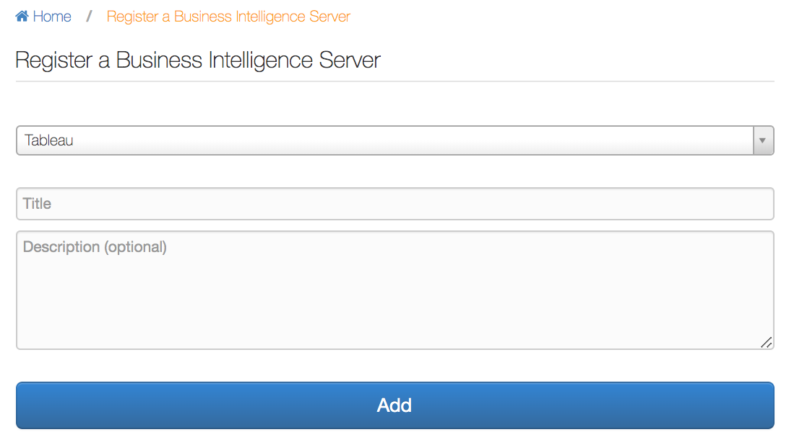

Add Tableau Sources on GBM V2¶
To add a Tableau source:
Sign in to Alation as a Server Admin, and on the main toolbar, click Sources. The Sources page will open.
On the upper right, click Add+, and in the list that opens, click BI Server. Register a BI Server wizard will open.
In the list of BI servers, select Tableau, then provide a Title and, optionally, a Description for your Tableau source:
Click Add. The Tableau source Settings page will open.
Under Server Connection, provide the connection parameters:
URI - URI of the Tableau server host
Username - Username of the Tableau server service account
Password - Password of the Tableau server service account
In this section, click Save.
Under PostgreSQL Connection, specify the parameters to access tables in Tableau PostgreSQL database. If you are using the default Tableau values, leave the defaults and provide the Host and Password:
JDBC URI - JDBC URI of the Tableau PostgreSQL host To connect over SSL, add
?ssl=trueExample:postgresql://tableau2020.alationcatalog.com:8060/workgroup?ssl=trueFrom version 2020.3, the SSL certificate must be uploaded under Additional Settings.Database Name
Port - port for connection
Username - Username to access tables in the PostgreSQL database
Password - Password of the PostgreSQL user
In this section, click Save.
Under Additional Settings, provide general parameters for metadata extraction. To extract metadata, Alation first fetches the list of projects to be extracted and then forms “portions”, or batches, of Tableau objects to be extracted. Batching helps to balance the query load on the Tableau server. Several parameters in this section serve to define the optimal batch size for Tableau objects.
Reducing the values of the batch parameters increases the number of extraction queries Alation sends to Tableau but decreases the size of the data fetched as the result of each query.
Parameter
Description
Disable permission enforcement
Select this checkbox to disregard user permissions on Tableau server and to NOT perform permission extraction. By default this checkbox is clear, and Alation will extract and mirror Tableau permissions.
Disable Hard Sync
Select this checkbox for the next metadata extraction job to keep in the catalog the data objects previously extracted but are deleted from Tableau Server since that time.
Disable preview extraction
Select this checkbox NOT to extract previews. By default this checkbox is clear, and Alation will extract previews, such as thumbnails, PNG images, and CSV files.
Disable high resolution preview extraction
Select this checkbox to disable extraction of PDFs for reports and dashboards.
Auto-extract Alation-certified projects
Select this checkbox to automatically add Alation-certified projects to the list of projects to extract.
User domain name
Domain name of the Tableau users that Alation should extract for permissions mirroring. This is the value of the name attribute of the domains table in Tableau PostgreSQL database.
From 2021.4, Alation supports multiple domain names. When specifying multiple domains in this field, separate them with commas.
Workbook extraction batch size
This parameter sets the batch size for workbook extraction. Note that although this parameter is defined for workbooks, the batch is formed based on the number of projects. In this parameter, you are setting the number of projects for which Alation will extract ALL workbooks in one extraction batch. For example, if you set this parameter to 5, it would mean that workbooks will be extracted in several batches, each batch being “all workbooks from first five projects”, then “all workbooks from the second five projects”, etc.
Published datasource extraction batch size
Published datasource extraction is batched by the number of data sources that Alation processes in a single batch.
Folder extraction batch size
This parameter sets the batch size for projects. It defines the number of projects Alation will process in a single batch.
Disable Certification
By default, Tableau certification is on. Select this checkbox if you do not want to use the certification feature.
Certified project suffix
Define the “suffix” for the project certified by Alation. If a workbook is certified in Alation, it will be moved to a new project with the name as <project_name - certified project suffix>, for example, <Population Growth Analysis - Alation Certified>.
Enable view data extraction
Select this checkbox if you want Alation to extract a sample of the distinct values of all report columns. This setting may slow down the extraction because it adds one additional API call per view.
Server ssl certificate
Available from version 2020.3 If connecting over SSL, upload the SSL certificate for the connection with the Tableau server.
Postgres ssl certificate
Available from version 2020.3 If connecting over SSL, upload the SSL certificate for Tableau PostgreSQL.
In this section, click Save.
From 2021.3: Under Application Settings, select the Disable Automatic Lineage Generation checkbox to skip the creation of automatic Lineage after extraction. Click Save. When automatic Lineage generation is disabled, during extraction Alation does not calculate Lineage data for this BI source.
For more information, see Disable Automatic Lineage Generation FAQ.
Under Test Connection, click Test to validate that connection to the Tableau server can be established.
Note
When connection to the Tableau internal PostgreSQL database is established over SSL (the
ssl=trueparameter is passed in the URI), then Test Connection will validate both the hostname and the SSL certificate.Under Extraction Settings, enable selective extraction if you want to only extract select projects. If this setting is disabled, Alation will perform full extraction, and all projects will be extracted.
Note
The Add button for the Selective Extraction will be disabled if the permission mirroring is enabled (the checkbox Disable permission enforcement is clear) and the current user does not have permission to access any projects on the Tableau server.
If required, enable automatic extraction and specify the schedule.
Click Run Extraction Now to start extraction. You can monitor the process in the status table at the bottom of the page. Any errors and exceptions will be logged in the Details column.
{kind=link}
Upto 2021.2:
{kind=link}
From 2021.3:
{kind=link}